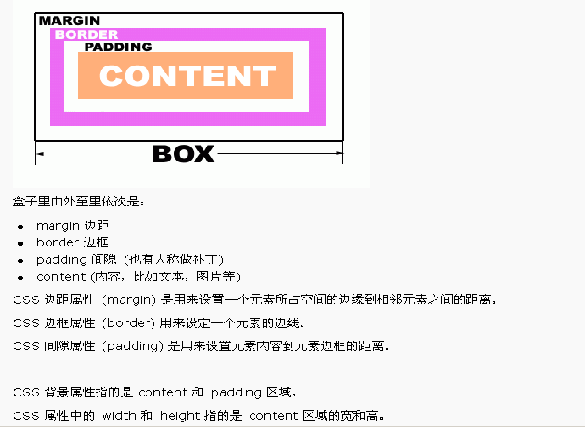

一、盒子模型

一个盒子实际所占有的宽度(或高度)是由“内容+内边距+边框+外边距”组成的。在CSS中可以通过设定width和height的值来控制内容所占的矩形的大小,并且对任意盒子都可以分别设定4条边各自的border,padding 和margin。
二、边框(border)的属性及参数
- border-color 边框的颜色
- border-width 边框的粗细程度值可为：thin、medium、length(具体的数值，如4px)
- border-style 边框的样式
属性值可为：
none 无边框
hidden 隐藏边框
dashed 虚线（最常用，务必记住）
solid 实线（最常用，务必记住）
dotted 点线（菱形虚线）
double 双线